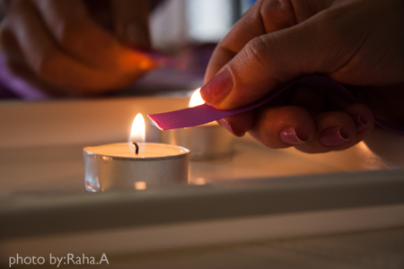
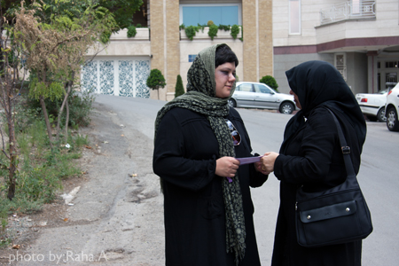
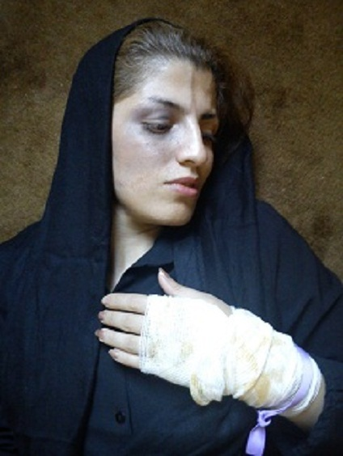

|
|
|
Browsing
Contact Us |
Campaigners |
Face to Face |
Tribune |
Interview |
News |
On the Web |
One Million |
Report
Farsi | Français | German | Italian | Spanish | العربية Also in this section
|
A Little Flick of Violence in the StreetsWomen’s Rights Activists Tell of Their Presence in the Streets in Protest against Violence against Women Wednesday 7 September 2011 Change for Equality: On the 5th September, a number of women’s movement activists took to the streets of Tehran as part of a symbolic movement to raise awareness about the phenomenon of violence against women. These women, whose faces bore the marks of violence, handed out purple ribbons attached to cards bearing descriptions and accounts of violence to people. This event took place after a number of women’s rights activists opposed to violence had earlier issued a statement analyzing the problem. In the statement, signed by seven hundred civil activists and institutions, it was declared that the purple ribbon is a symbol of protest against the phenomenon of violence against women. The article below is a short account of the experience of the participants in this movement, as well as a record of people’s reactions in the face of the phenomenon of violence.
Farzaneh Some people stared at us in amazement, as if they couldn’t believe a woman with a face bruised like that dare show herself in the street without hiding her bruises. Some after seeing me once didn’t want to see me any more and began looking at anywhere that wasn’t my face. When I went and stood in front of them it looked like they realized I wasn’t ashamed to be seen. You could see in their eyes that they felt sorry and made sympathetic comments to one another. One asked why. Another said I should wear sunglasses so my bruises couldn’t be seen. Then when I gave the card to them they asked in surprise, "what’s this then?" I didn’t have time to explain and so passed on by.
 Nahid and Azadeh People were so indifferent that we thought that maybe they didn’t want to invade our private space, or perhaps because people in the nicer parts of town [the Upper City] have better things to do they didn’t have the time to stand and examine the face of a woman who had been on the receiving end of violence. There were only two people the whole time who showed a limited amount of sensitivity. Near the Emamzadeh [shrine] there was a woman who was offering up prayers for the twenty-seventh day of Ramadan who looked at us as she was coming back from praying. As I offered her a card she looked at me and said, "I don’t have the stomach for it". The second case happened when we went into the booth where they provide chadors for women going into the shrine. A woman looked at us and said, "God willing may his hand break. I will pray for you, but go and get a divorce." I said that I have children, and she shook her head in sorrow.
Maryam Women and men passed by the young woman. The women did not take their eyes off the young woman’s face, as if they couldn’t believe it. They would come back and look at her from behind, perhaps so that the young woman wouldn’t feel ashamed. Sometimes they frowned or furrowed their brows and sighed, but when the young woman gave them cards, once again they seemed surprised. Some were taken by motherly feelings and did their best to make sure that this violence not be exposed but instead as usual remain hidden. They offered all sorts of advice and words of wisdom, such as telling the young woman to cover her eyes so that things people oughtn’t to see wouldn’t be seen.
 Noushin I came alone from Gorgan Street to Bahar Street with a black eye and an arm in a sling. The bandage on my arm meant that unconsciously I felt I couldn’t open a taxi door. I got into the taxi and sat so that the driver could see me in the mirror. As I was walking in the street I stared at people so that they’d look at me. Those who happened to look up at my face quickly looked down again. On Bahar Street I was with another friend of mine so I could see better what people’s reactions were. Once again practically the same thing happened. A couple of people asked what was going on. Some people didn’t want to get it. People were totally indifferent. Now, if we had put on some make-up to try to look hot they would’ve definitely looked at us and perhaps made a thousand snide comments about us. Nonetheless we said to ourselves, "if only we had more cards to give out", and continued on our way.
 Somayyeh Everyone was looking amazed at my bruised face. No-one refused the leaflets. The street was quiet. I only gave the leaflets to women. They all took them in silence, and when I went back, there was nothing on the ground. No-one had thrown the leaflets away. I had a good feeling and thought, "if only I had more leaflets".
Maryam The looks they gave us in the south-west section of the city (Salsabil) were full of sorrow. Men were much more affected by seeing the bruised and sad faces of a young woman and for several moments could not take their gaze from her, even when they had passed her and were looking at her from behind. They shook their heads in sadness. Young men holding hands with their wives glanced atmy face and were transformed, whispering something into their young wives’ ears. The young male shopkeepers and traders also followed my face with astonished looks. Some said, "may his hand break" and others asked which merciless brute had done this. When women, both young and old, saw my bruised face, they stopped looking at the shop windows and stared in astonishment at it. Whenever they wanted to ask something there was a leaflet with a purple ribbon for them, and they started to read. |